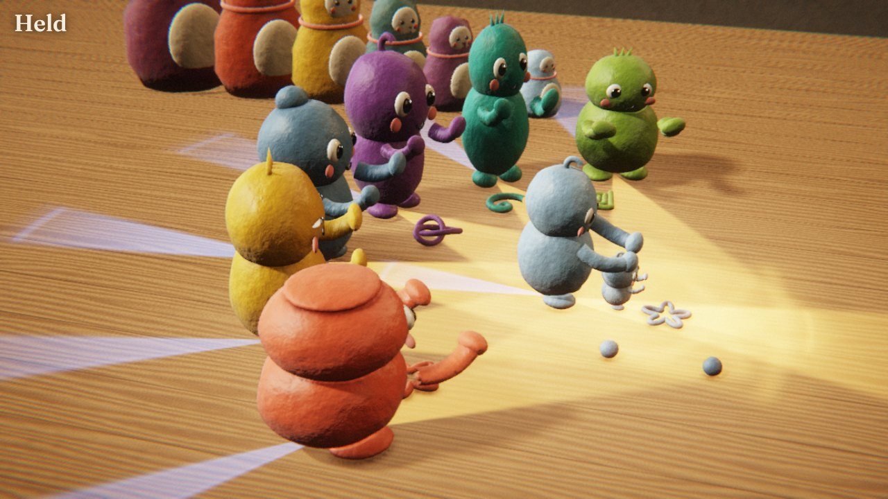
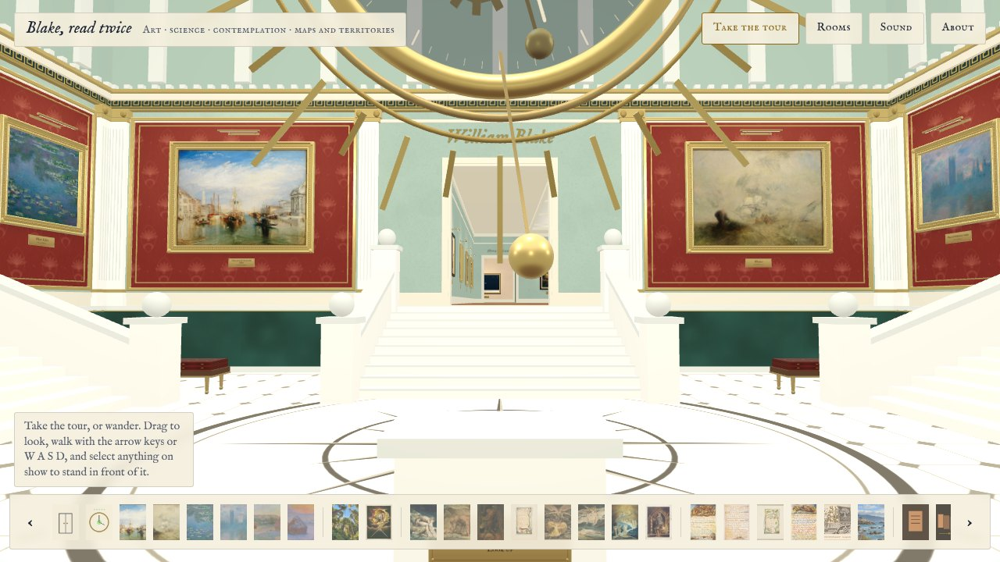
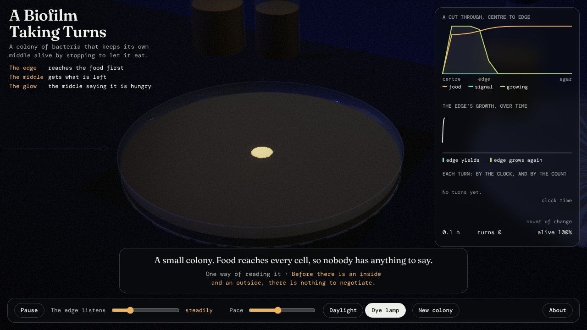

Pedagogical simulation design
Hard ideas, made to be handled.
I design simulations for learning: films in clay, studios you can work in, and museums you can walk through, all running in a web browser. I taught child development and ran early-years settings for many years. The method here is the same one. Prepare the environment carefully, then let the learner find out.
The Museum
Two museums and a tunnel between them
A walk-through gallery of William Blake, and a laboratory about how chemistry might have become biology. You can wander, take the tour, or lean over a table and change what is running on it.
Blake, read twice starts in a great court. Blake’s pictures and plates are up the steps. To the left is his printing house, where you ink a plate and pull an impression, and beside it a clay studio with a wheel and a kiln. Further rooms deal with maps and territories, models, and mathematics.
JOOLES is the lab at the other end of the tunnel: ten rooms and 83 stops. Sixteen of them are tables, and each table is a real simulation running as you watch: lightning, spots that divide, a dish that fires, a worm that remembers its shape. Every label says what the model shows, what to try, and what it leaves out.
I built the Museum over autumn 2026 in conversation with Claude Fable 5.2, Anthropic’s model. I brought the pedagogy, the sources and the judgement about what a learner needs at each stop. The model wrote and tested the code. I show it here as an example of what one educator and a current model can make together.
The Museum is a prototype. JOOLES was made without the involvement of any author it cites and claims no endorsement. Its models are simple on purpose. Quotations and references in the Blake rooms still need checking against the books before any formal use.


- Runs in any modern browser with WebGL. Nothing to install.
- For students, teachers and curious visitors. Each exhibit has a plain-language label and sources.
- Opens as a shared page on claude.ai. The clay pieces below are also hosted on this site.
Films in clay
Two short films from the Museum’s clay studio
Both were modelled and lit in code and shot as stop-frame. The mathematics underneath each one is worked out first and stated in the film’s About sheet. The narrator’s voice is synthetic.
Held
How one of us comes to be: held by someone older, who was held by someone older still. Then what happens when many people, each held differently, try to see further together, and when a new kind of mind joins the circle. The light in front of each figure is what it can care about.
Draws on Winnicott’s account of holding and potential space, and on simple filtering mathematics for how a picture of the world is corrected by another person.
At the Potter’s Wheel
A lump of clay on a turning wheel, and a question about hands: how much of your own weight to use beside another person, when to hold still, and when to let go. The clay in the film is a running simulation: it keeps its volume and answers to the hands.
Hands on
Two exhibits to try now
These open on this site. Each has an About button that says how it was worked out and what it leaves out.

The Clay Studio
A bench, a potter’s wheel and a kiln. Shape a lump with a dozen tools, throw a pot, choose from sixteen glazes, set the kiln temperature and fire it. The clay keeps its volume as you work it. Save a photograph, or a shape for a 3D printer.
Open the studio →
A Biofilm Taking Turns
A colony of bacteria that keeps its own middle alive. When the centre runs short of food it signals, and the edge stops growing for a while so that food can get through. Change how well the edge listens and watch what happens to the middle.
Open the dish →Talk · Active Inference Institute Symposium
FEP and Active Inference through the lens of Winnicott’s Potential Space
A talk on what a developmental psychologist’s account of play has to say to the free energy principle: the perfect mirror, graduated failure, surviving the other, and the space between two people where things are both made and found. Held is the same argument, made in clay.
Research notebook
A side project: temporal grammar
Alongside the design work I keep a research notebook called CRR: Coherence, Rupture, Regeneration.
It is a small mathematical grammar for how a system carries its past through a change: what builds up, when it breaks, and what is rebuilt from what came before. I use it behind the scenes when I work out the physics of a simulation, and I find it helpful for thinking about “Raising AI”, about superalignment, and about how to make the key issues visible to people outside the field.
It is my own working theory, read alongside the free energy principle and active inference. Much of its mathematics restates established results in one vocabulary. It is not established science, and the simulations on this site do not depend on it being right.
About
Alexander Sabine
An educator who builds things. Twenty years of teaching human development, running early-years and Forest School settings, and designing learning environments led to building them in software.
I am a Principal Lecturer by background, with a doctorate in participatory mapping, and I serve on the Board of Directors of the Active Inference Institute, where I am building a library of pedagogical simulations for the free energy principle and active inference. My teaching is constructivist: begin where the learner is, give them good materials and unhurried attention, and say plainly what a model can and cannot show.
Consultancy work, including simulation and learning-environment design for organisations, goes through Honami.
Roles
Board Director, Active Inference InstituteFounder, HonamiTrustee, StoneCrabs TheatreEducation
EdD, Maps and Territories, University of PortsmouthMA Professional Teaching and Learning, ChichesterBA English Literature, SouthamptonBSc Psychology, Open UniversityPractice
Fellow of the Higher Education AcademyEarly Years Teacher StatusForest School Programme LeaderDiploma in Integrative Sandplay- Sabine, A. (2026). Phase-gating across precision channels: Topological constraints on multi-channel belief update dynamics. In Artificial General Intelligence (AGI 2026). Lecture Notes in Computer Science. Springer Nature (in press).
- Mikuska, E., Fairchild, N., Sabine, A., & Barton, S. (2025). Quality early childhood education and care practices. International Journal of Early Years Education, 33(2), 411–425.
- Salvi, F., Wijaya-Mulya, T., Sabine, A., & Tjahjono, E. (2025). ‘The sun was so thirsty it drank all the water!’ Co-constructing pedagogies for environmental education in UK primary schools. Children’s Geographies.
- Sabine, A., & Langston, T. (2024). Aesthetic harmonies: Nature, technology and holistic learning. In Outdoor learning in higher education (pp. 175–185). Routledge.